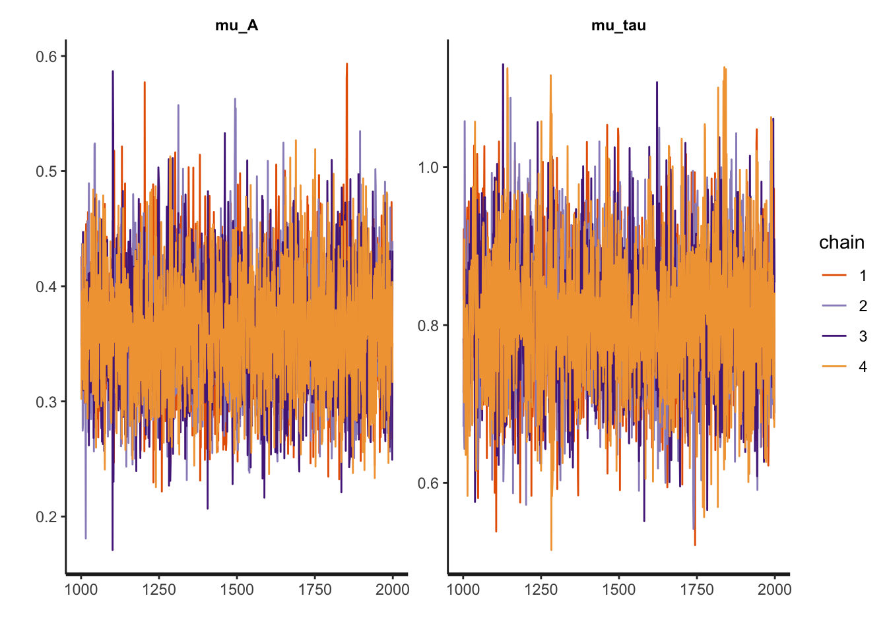
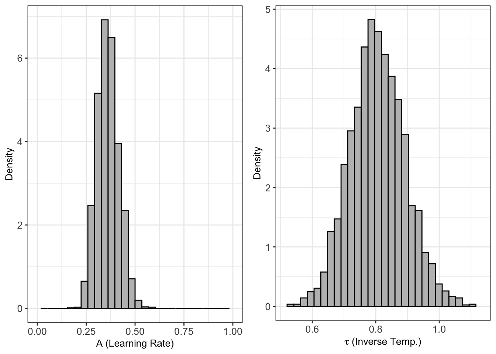
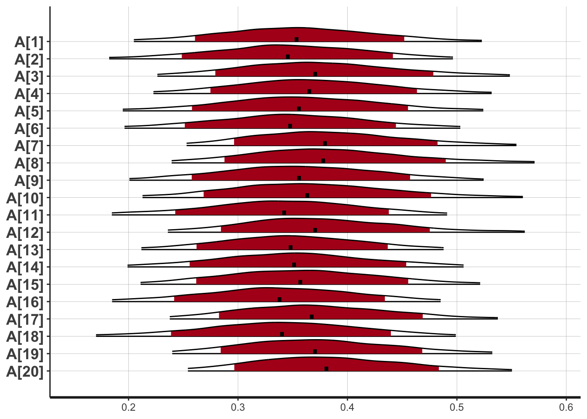

# precompile the models if you are a frequent use. It makes fitting models quicker
#Sys.setenv(BUILD_ALL='true') # Build all the models on installation
#Sys.setenv(MAKEFLAGS='-j 4') # Use 4 cores for compilation (or the number you want)
# install the package
#install.packages("hBayesDM", dependencies=TRUE)What is HBayesDM
Computational modeling is a growing approach in cognitive and behavioral sciences. Computational modeling is commonly distinguished from regular statistical modeling (like linear regression, t-test) by serving as in some sense a “process model” of cognition rather than mere quantitative checks on whether an effect is legitimate. However, the boundary between a statistical model and a computational model is often quite blurry. In many usage cases, well-established frameworks of computational models function as statistical models to examine effects of certain experimental manipulations. This is especially truth in the field of learning and decision-making where a wealth of established computational models under the framework of value-based decision-making and reinforcement learning exist. However, computational modeling often require a researcher to program the models from scratch because of the lack of easily accessible packages like for linear regressions and t tests. This creates a high barriers for entry. HBayesDM is a nice package created to address this issue by packaging up a wide sort of well-validated computational models of learning and decision-making so that people can easily call on them in their research just like calling on a statistical model. Moreover, this package performs Bayesian fitting for these models. Computational models in decision-making often have unconstrained parameter space and rugged terrain of likelihood function. This makes regularization important for create interpretable parameter fits. Among other advantageous, Bayesian model fitting is a very flexible and effective way of regularization.Therefore HBayesDM is a useful package for researchers in learning decision-making to leverage decades of research in computational modeling to advance of understanding of the mechanisms behind how people (and other animals) make decisions!
While there already exists many good blogs on the internet for how to use different kind of computational models supported by the package, in this blog I will focus on demonstrating the model I am personal most familiar with, which is the Rescorla-Wagner model of the 2-armed bandit task.
Load packages and data
library(hBayesDM)Loading required package: Rcpp
This is hBayesDM version 1.2.1#load the example bandit task data
dataPath = system.file("extdata/bandit2arm_exampleData.txt", package="hBayesDM")
df = read.table(dataPath, header = TRUE)
# Remove NA's if there is NA data.What is a 2-armed bandit task?
A 2-armed bandit task is the simplest and most classic set up for the study of reinforcement learning in humans. Reinforcement learning refers to the ability to learn from rewards. In other words, people will be able to learn overtime which action yields more reward and increase their frequencies of taking that action. In a 2-armed bandit task, there are 2 possible actions to take. Each action corresponding to playing an imaginary bandit machine once. A bandit machine is kind of casino machine that probabilistically spit out reward each time you play it. By playing it I mean pulling the lever or pressing a key on the key board. In sum, the set up is quite simple. For each participant, there are two options (or two keys to press if you will). At each trial, they can press one of the two keys. Each time they do so, they will either get an reward, or loss a reward. They do so for 100 times. The data has 4 variables:
subjID: The participant’s id
trial: which trial
choice: the key that the participant pressed at that trial. It can be either the 1st bandit machine or the 2nd.
outcome: making that choice either gave the participant one more unit of reward (1) or lose one unite of reward (-1).
The Rescorla-Wagner Model
The Rescorla-Wagner model is the simplest computational model of reinforcement learning. There are so many variants of this simple model that incorporate other cognitive mechanisms but Rescorla-wagner model really sets the framework here. This model has 2 parameters: the learning rate A and the inverse temperature tau. The model assumes that the learning agent stores a value representation of each of the options (bandits). If by choosing an option, the agent gains a reward, then the value associated with that option increases by 1 times A. If the agent instead receives a loss, then the value associated will decrease by 1 times A or increase by -1 times A. Here learning rate A controls how sensitive is the agent to the incoming reward information. High learning rate A means the agent reacts really quickly to each new reward information. Thus the agent learns really quickly. While low learning rate A corresponds to an agent the learns more slowly. The values were initialized to be uniform.
At each trial, the agent choose each option according to the values of each option. The higher the value, the more likely the agent would choose it, corresponding to the process of reinforcement learning. The exactly probability distribution from which the choice is sampled is determined by applying the softmax function to the values. What softmax function does is nothing but converting an array of number that does sum up to 1, into an array of number that does. Softmax function can be thought of as a generalization of logistic function. In the case of a 2-armed bandit it exactly is equivalent to a logistic function. The softmax function takes in one parameter called inverse temperature. You may ask why inverse temperature. Because this softmax function originates in thermodynamics where people study temperature (sorry this is as much I know about thermodynamics haha). Higher temperature, things are noisier so behavior is more random. In the softmax function, higher the temperature (lower the inverse temperature), the more random the choice. In the extreme if the temperature is infinite (or the inverse temperature is 0), then the agent always just randomly choose an option, regardless of the learned value. On the contrary with low temperature ( an high inverse temperature), the agent always chooses the most rewarding option. The reason why the model takes in the inverse of temperature as a parameter is for numeric stability of calculation mostly.
These two parameter are not orthogonal and they are very much correlated. Let is consider extreme cases. If A = 0, then no matter what tau is, the agent always chooses randomly, because it does not update values and the value for each option remains the same (as initialized). If tau = 0. then the agent entirely ignores the values and also choose randomly always. Therefore from mere behavioral data one cannot tell if the agent has A=0 or tau=0. This correlation makes Bayesian fitting extra valuable because it entails that many pairs of A and tau could fit the data equally well. However, having crazy values of parameters do not really help interpretation. After all, these 2 parameters do capture different cognitive processes. A manefasts how sensitive is an agent to reward signals, whereas tau reveals overall how “exploratory” an agent is.
Fit the model using HBayesDM
output = bandit2arm_delta(
data = "example", niter = 2000, nwarmup = 1000, nchain = 4, ncore = 4)
Model name = bandit2arm_delta
Data file = example
Details:
# of chains = 4
# of cores used = 4
# of MCMC samples (per chain) = 2000
# of burn-in samples = 1000
# of subjects = 20
# of (max) trials per subject = 100
****************************************
** Use VB estimates as initial values **
****************************************
Chain 1: ------------------------------------------------------------
Chain 1: EXPERIMENTAL ALGORITHM:
Chain 1: This procedure has not been thoroughly tested and may be unstable
Chain 1: or buggy. The interface is subject to change.
Chain 1: ------------------------------------------------------------
Chain 1:
Chain 1:
Chain 1:
Chain 1: Gradient evaluation took 0.000454 seconds
Chain 1: 1000 transitions using 10 leapfrog steps per transition would take 4.54 seconds.
Chain 1: Adjust your expectations accordingly!
Chain 1:
Chain 1:
Chain 1: Begin eta adaptation.
Chain 1: Iteration: 1 / 250 [ 0%] (Adaptation)
Chain 1: Iteration: 50 / 250 [ 20%] (Adaptation)
Chain 1: Iteration: 100 / 250 [ 40%] (Adaptation)
Chain 1: Iteration: 150 / 250 [ 60%] (Adaptation)
Chain 1: Iteration: 200 / 250 [ 80%] (Adaptation)
Chain 1: Success! Found best value [eta = 1] earlier than expected.
Chain 1:
Chain 1: Begin stochastic gradient ascent.
Chain 1: iter ELBO delta_ELBO_mean delta_ELBO_med notes
Chain 1: 100 -1295.075 1.000 1.000
Chain 1: 200 -1298.594 0.501 1.000
Chain 1: 300 -1288.960 0.337 0.007 MEDIAN ELBO CONVERGED
Chain 1:
Chain 1: Drawing a sample of size 1000 from the approximate posterior...
Chain 1: COMPLETED.Warning: Pareto k diagnostic value is 0.85. Resampling is unreliable.
Increasing the number of draws or decreasing tol_rel_obj may help.
************************************
**** Model fitting is complete! ****
************************************# Note: here I didn't set data=df because there is a bug in the package for the newest R version. It would have worked for R 4.1. This bug stil awaits to be fixed for the newest R version. But setting data="example" does the same thing and used this example dataset.Now the model is fit! How simple! Just one line like fitting a regression model. Let us quick check if the model fitting worked.
plot(output, type="trace", fontSize=11)
The trace plot looked like catepillars! So the Bayesian fitted was decent. We can proceed to interpret the parameters.
Unpack the output
First, let us to at the fitted parameters. Below you see the fitted A and tau for each subject. The estimates are means of the posterior distribution.
output$allIndPars subjID A tau
1 1 0.3561810 0.7280456
2 2 0.3456318 0.7647481
3 3 0.3754597 0.7000733
4 4 0.3708238 0.7527602
5 5 0.3581892 0.7400297
6 6 0.3508396 0.8541431
7 7 0.3851224 1.0031085
8 8 0.3846750 0.8058465
9 9 0.3585976 0.8004985
10 10 0.3684237 0.8563626
11 11 0.3412473 0.9146940
12 12 0.3748351 0.7778413
13 13 0.3499101 0.8217206
14 14 0.3530653 0.6558828
15 15 0.3591910 0.8080967
16 16 0.3372613 0.7980661
17 17 0.3729282 0.9712159
18 18 0.3432543 0.7091264
19 19 0.3747407 0.8550077
20 20 0.3862169 1.0020158If you are interested in the detailed outcome of Bayesian fitting, you can run
output$fitInference for Stan model: anon_model.
4 chains, each with iter=2000; warmup=1000; thin=1;
post-warmup draws per chain=1000, total post-warmup draws=4000.
mean se_mean sd 2.5% 25% 50% 75% 97.5%
mu_A 0.36 0.00 0.05 0.26 0.32 0.36 0.40 0.47
mu_tau 0.80 0.00 0.09 0.64 0.75 0.80 0.86 0.99
sigma[1] 0.14 0.00 0.10 0.01 0.06 0.13 0.20 0.37
sigma[2] 0.14 0.00 0.08 0.01 0.09 0.14 0.19 0.30
A[1] 0.36 0.00 0.08 0.21 0.31 0.35 0.40 0.53
A[2] 0.35 0.00 0.07 0.19 0.30 0.35 0.39 0.49
A[3] 0.38 0.00 0.08 0.23 0.32 0.37 0.42 0.55
A[4] 0.37 0.00 0.08 0.23 0.32 0.37 0.42 0.54
A[5] 0.36 0.00 0.08 0.20 0.31 0.36 0.41 0.52
A[6] 0.35 0.00 0.08 0.20 0.30 0.35 0.40 0.51
A[7] 0.39 0.00 0.07 0.26 0.34 0.38 0.43 0.55
A[8] 0.38 0.00 0.08 0.25 0.33 0.38 0.43 0.56
A[9] 0.36 0.00 0.08 0.21 0.31 0.36 0.41 0.52
A[10] 0.37 0.00 0.09 0.21 0.31 0.36 0.42 0.55
A[11] 0.34 0.00 0.07 0.19 0.29 0.34 0.39 0.49
A[12] 0.37 0.00 0.08 0.24 0.32 0.37 0.42 0.55
A[13] 0.35 0.00 0.07 0.21 0.31 0.35 0.39 0.48
A[14] 0.35 0.00 0.08 0.20 0.30 0.35 0.40 0.51
A[15] 0.36 0.00 0.08 0.21 0.31 0.36 0.41 0.53
A[16] 0.34 0.00 0.08 0.18 0.29 0.34 0.39 0.48
A[17] 0.37 0.00 0.08 0.24 0.32 0.37 0.42 0.54
A[18] 0.34 0.00 0.08 0.18 0.30 0.34 0.39 0.50
A[19] 0.37 0.00 0.07 0.24 0.32 0.37 0.42 0.54
A[20] 0.39 0.00 0.08 0.26 0.33 0.38 0.43 0.56
tau[1] 0.73 0.00 0.15 0.44 0.63 0.73 0.82 1.01
tau[2] 0.76 0.00 0.17 0.43 0.66 0.77 0.86 1.11
tau[3] 0.70 0.00 0.15 0.39 0.61 0.71 0.80 0.97
tau[4] 0.75 0.00 0.16 0.42 0.65 0.75 0.85 1.08
tau[5] 0.74 0.00 0.16 0.42 0.64 0.74 0.84 1.05
tau[6] 0.85 0.00 0.19 0.53 0.74 0.83 0.95 1.29
tau[7] 1.00 0.00 0.21 0.69 0.85 0.97 1.12 1.49
tau[8] 0.81 0.00 0.16 0.49 0.71 0.80 0.90 1.17
tau[9] 0.80 0.00 0.16 0.49 0.70 0.79 0.89 1.15
tau[10] 0.86 0.00 0.16 0.58 0.75 0.84 0.94 1.21
tau[11] 0.91 0.00 0.18 0.62 0.79 0.89 1.02 1.33
tau[12] 0.78 0.00 0.13 0.52 0.69 0.78 0.86 1.04
tau[13] 0.82 0.00 0.18 0.50 0.71 0.81 0.92 1.20
tau[14] 0.66 0.00 0.15 0.35 0.55 0.66 0.76 0.93
tau[15] 0.81 0.00 0.18 0.47 0.70 0.80 0.91 1.21
tau[16] 0.80 0.00 0.16 0.49 0.70 0.80 0.89 1.14
tau[17] 0.97 0.00 0.21 0.65 0.82 0.94 1.09 1.45
tau[18] 0.71 0.00 0.16 0.38 0.60 0.72 0.82 1.01
tau[19] 0.86 0.00 0.17 0.55 0.74 0.84 0.95 1.24
tau[20] 1.00 0.00 0.25 0.65 0.82 0.95 1.13 1.63
log_lik[1] -66.17 0.01 0.49 -67.49 -66.34 -66.02 -65.83 -65.72
log_lik[2] -67.44 0.01 0.44 -68.65 -67.59 -67.32 -67.14 -66.99
log_lik[3] -67.09 0.01 0.73 -68.80 -67.51 -66.98 -66.56 -65.98
log_lik[4] -68.00 0.01 0.45 -69.06 -68.21 -67.92 -67.69 -67.40
log_lik[5] -67.43 0.01 0.45 -68.65 -67.58 -67.29 -67.13 -66.98
log_lik[6] -63.87 0.01 0.46 -64.90 -64.12 -63.83 -63.58 -63.03
log_lik[7] -53.81 0.02 1.08 -56.25 -54.56 -53.65 -52.93 -52.31
log_lik[8] -64.80 0.01 0.56 -66.06 -65.15 -64.75 -64.41 -63.87
log_lik[9] -64.83 0.01 0.27 -65.62 -64.88 -64.74 -64.68 -64.61
log_lik[10] -59.05 0.01 0.45 -60.25 -59.17 -58.90 -58.78 -58.57
log_lik[11] -57.93 0.01 0.87 -59.83 -58.44 -57.84 -57.33 -56.46
log_lik[12] -60.92 0.01 0.48 -62.19 -61.11 -60.80 -60.60 -60.35
log_lik[13] -64.89 0.01 0.43 -66.00 -65.08 -64.78 -64.58 -64.40
log_lik[14] -68.89 0.02 0.99 -71.15 -69.51 -68.70 -68.10 -67.63
log_lik[15] -66.29 0.01 0.26 -66.98 -66.34 -66.22 -66.15 -66.04
log_lik[16] -64.05 0.01 0.60 -65.34 -64.42 -64.01 -63.63 -63.05
log_lik[17] -56.31 0.02 0.87 -58.35 -56.86 -56.18 -55.60 -55.17
log_lik[18] -68.99 0.01 0.64 -70.47 -69.34 -68.89 -68.50 -68.14
log_lik[19] -62.63 0.01 0.44 -63.81 -62.79 -62.50 -62.32 -62.17
log_lik[20] -60.35 0.02 1.09 -62.55 -61.12 -60.33 -59.52 -58.44
lp__ -1299.11 0.16 5.67 -1311.05 -1302.70 -1298.82 -1295.09 -1288.87
n_eff Rhat
mu_A 3769 1
mu_tau 2830 1
sigma[1] 2602 1
sigma[2] 1594 1
A[1] 4009 1
A[2] 4172 1
A[3] 3966 1
A[4] 4423 1
A[5] 4131 1
A[6] 4049 1
A[7] 4377 1
A[8] 3793 1
A[9] 3290 1
A[10] 3832 1
A[11] 3796 1
A[12] 4556 1
A[13] 4630 1
A[14] 3672 1
A[15] 4051 1
A[16] 4019 1
A[17] 4842 1
A[18] 3785 1
A[19] 4941 1
A[20] 4327 1
tau[1] 3998 1
tau[2] 4597 1
tau[3] 3565 1
tau[4] 4611 1
tau[5] 4453 1
tau[6] 4550 1
tau[7] 2805 1
tau[8] 5610 1
tau[9] 5042 1
tau[10] 5329 1
tau[11] 4096 1
tau[12] 5882 1
tau[13] 5194 1
tau[14] 2814 1
tau[15] 4540 1
tau[16] 4267 1
tau[17] 3479 1
tau[18] 3409 1
tau[19] 4855 1
tau[20] 3161 1
log_lik[1] 3562 1
log_lik[2] 3930 1
log_lik[3] 3642 1
log_lik[4] 3453 1
log_lik[5] 3402 1
log_lik[6] 3052 1
log_lik[7] 2516 1
log_lik[8] 3158 1
log_lik[9] 2183 1
log_lik[10] 2648 1
log_lik[11] 3491 1
log_lik[12] 2968 1
log_lik[13] 3336 1
log_lik[14] 2834 1
log_lik[15] 2178 1
log_lik[16] 3473 1
log_lik[17] 3022 1
log_lik[18] 4553 1
log_lik[19] 3131 1
log_lik[20] 2913 1
lp__ 1296 1
Samples were drawn using NUTS(diag_e) at Fri May 3 22:00:18 2024.
For each parameter, n_eff is a crude measure of effective sample size,
and Rhat is the potential scale reduction factor on split chains (at
convergence, Rhat=1).This gives you the summary of full posterior distribution of each random variable in the Bayesian hierarchical model. If you are only interested in the point estimate of the parameters, you can just go with output$allIndPars. Let us visualize the fitted parameters. HBayesDM comes with a easy plot function as well!
plot(output)Warning: The dot-dot notation (`..density..`) was deprecated in ggplot2 3.4.0.
ℹ Please use `after_stat(density)` instead.
ℹ The deprecated feature was likely used in the hBayesDM package.
Please report the issue at <https://github.com/CCS-Lab/hBayesDM/issues>.
If you want to visualize the full posterior for each participant you can also do that:
plotInd(output, "A")ci_level: 0.8 (80% intervals)outer_level: 0.95 (95% intervals)
plotInd(output, "tau")ci_level: 0.8 (80% intervals)outer_level: 0.95 (95% intervals)However, if you want to compare the overall parameter fit of a group of participant and compare it with another group of participant, you can directly compare the posterior of the mean. This could be useful for example in computational psychiatry, researchers may be interested in comparing the learning rate between people with depression and neurotypical people. Because we only have one example dataset, let us just compare this 20 subjects in our example data to itself, just for the sake of demonstrating the code.
#for the learning rate
diffDist = output$parVals$mu_A - output$parVals$mu_A
HDIofMCMC( diffDist ) # get the 95% density interval[1] 0 0plotHDI( diffDist ) # plot the differences of the group mean[1] "95% Highest Density Interval (HDI):"
[1] "Lower bound = 0, Upper bound = 0"Warning in geom_segment(aes(x = HDI[1], y = 0, xend = HDI[2], yend = 0), : All aesthetics have length 1, but the data has 4000 rows.
ℹ Did you mean to use `annotate()`?
#for the inverse temperature
diffDist = output$parVals$mu_tau - output$parVals$mu_tau
HDIofMCMC( diffDist ) # get the 95% density interval[1] 0 0plotHDI( diffDist ) # plot the differences of the group mean[1] "95% Highest Density Interval (HDI):"
[1] "Lower bound = 0, Upper bound = 0"Warning in geom_segment(aes(x = HDI[1], y = 0, xend = HDI[2], yend = 0), : All aesthetics have length 1, but the data has 4000 rows.
ℹ Did you mean to use `annotate()`?
You may wonder, why do we have parameter fits to each individual subject AND a parameter fit to the entire sample? This is akin to the hierarchical modeling in general linear regression (or mixed-effects modeling). In fact, the framework is exactly the same. You could fit the hierarchical models in a Bayesian we as well using brms package. The mu_[parameter] you get from the model fit is analogous of the fixed-effects and the individual fits are analogous to the random effects. However, some papers also just ignore the mean group estimates and instead just average the individual fits and treat those as point estimates, similar to what you would do in frequentist model-fitting. Both ways are probably more or less equivalent. Since HBayesDM already nicely give you this posterior group mean estimates, why not just use it? This concludes my blog that introduces you to how to fit a simple reinforcement learning model using HBayesDM. This package as a rich repertoire of other common computational models in learning and decision-making, and the usage should be more or less the same. However, if your work requires you to build a novel model that doesn’t exist in this repertoire, HBayesDM may not work for you. For example, if you are interested in combining this reinforcement learning model with a utility function, you may need to write up your own model. Nevertheless, HBayesDM is still a powerful package for research that mainly wants to leverage these tasks and computational models as tools or in other words, statistical models, to examine questions in social, clinical, or model-based cognitive neuroscience. It makes the outputs of research in computational modeling much more accessible to a wide range of researchers.


No matching items